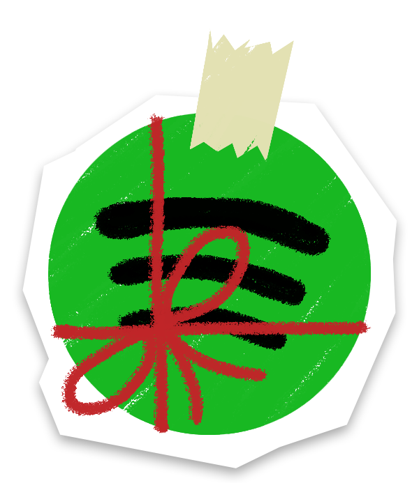
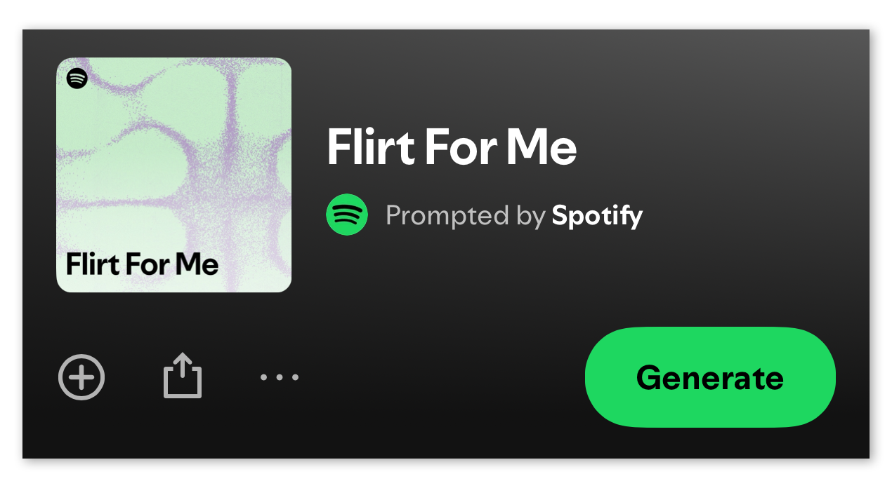
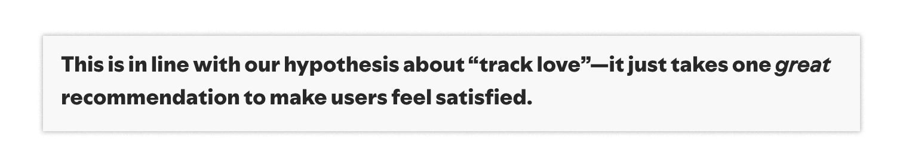
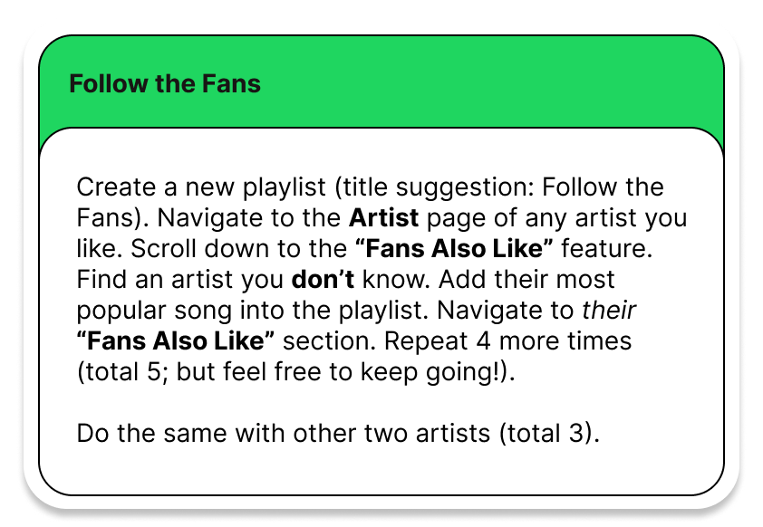
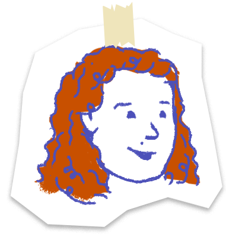
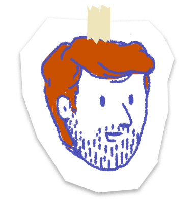
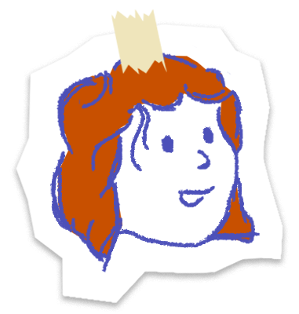
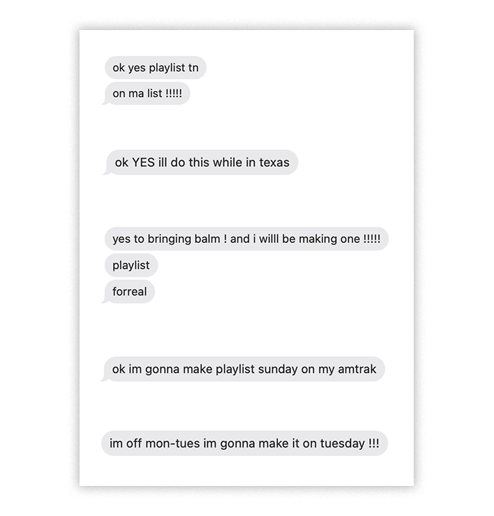
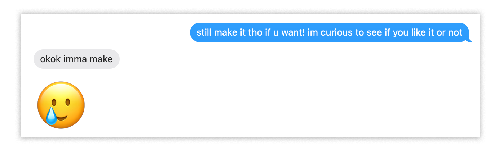

Spotify UnWrapped
For almost every single week in the past decade, I have opened up Spotify on Monday morning to listen to my Discover Weekly. Sometimes the entire playlist would be a flop. Sometimes I would get a bop, quickly saving the song into my Liked Songs (now at 5,400+ songs), never to encounter the track again. Discover Weekly, in 2025, recorded more than 100 billion tracks streamed since its release [1]. Spotify is now inundated with a dozen ways to use AI to navigate the complex web that makes up the music industry. From Discover Weekly came Release Radar, Daily Mixes, Genre Mixes, Artist Radios, DJ, and now... Prompted Playlists, a feature that allows users to type in text prompts to generate playlists. With little faith and morbid curiosity, I clicked on the feature and typed the following prompt: “Make a playlist of songs and artists I have never heard of but are similar to the music I listen to (e.g., Katie Tupper, Lawrence).” And thus, Hidden Gems was born.
A keen reader may notice that the playlist is, in fact, not full of hidden gems. Wild Rivers and Re:um were new to me and surprisingly pleasant! But Olivia Dean? Harry Styles? Noah Kahan? Bruno Mars? Fleetwood Mac? Amy Winehouse? Vienna by BILLY JOEL? Preposterous. The description for the playlist that Spotify decided to generate mockingly read, “Soul-soaked grooves meet indie sunshine,” and note the em dash, “—'Baby Steps' and 'End of Beginning' lead this fresh batch of feel-good jams you somehow haven't spun yet.” Hah.
To add salt to my wound, Spotify added a couple of prompted playlists, created by yours truly (the Spotify team), to my homepage. Flirt For Me. What do you mean... Flirt For Me? Out of sheer curiosity, I tapped on the playlist and slowly scrolled down, reading the prompt with a disgruntled scowl:
![Prompt by Spotify reads: Put together a playlist of songs that do the flirting for me, just in time for Valentine's Day. I want to impress my crush with a collection of songs that hint, tease, and confess without ever saying the words. Every song should feel like a text I'm too scared to send: equal parts butterflies, longing, and nervous humor. The vibe is similing into your phone, overanalyzing emojis, and pretending it's just music. By the end, they should know and figure out that I'm into them. Focus on songs you think I'd like based on my listening history. You can includ both songs I know and songs I haven't heard yet.](img/prompt-2.png)
Romance is dead. Eviscerated by AI. Take me back to the days of cassette mixtapes.

Years ago (circa 2010), before my music tastes became enmeshed in the whims of Spotify's algorithm, I frequented a website called Hype Machine to find the newest and, dare-I-say, hypest music. Rather than relying on personal data, Hype Machine gathers new songs across hundreds of music websites, populating its “Popular” page with the most liked songs from Hype Machine users. Hype Machine was how I found now (relatively) popular musicians such as Jaymes Young and smaller artists like Lewis Del Mar & Woolf and Wondershow. I remember the sheer delight of finding a new song to jam out to. There is something so human about sifting through the noise to discover a hidden gem (and truly a hidden gem). Something about a necessary friction to engage with the more ephemeral aspects (e.g., delight, curiosity) of how we navigate our world.
Sadly, that was then. Now, I am, along with my friends, approaching the age (30) where, reportedly [2, 3, 4], my music taste will stagnate and my “ability to keep up with music trends peters off” [2].

User research of Discover Weekly from Spotify [5] notes that “it just takes one great recommendation to make users feel satisfied.” I am, unfortunately, not satisfied. I cannot let one great recommendation be my only way of exercising the ability to keep up with music trends.
To Gift an Algorithm
Traditionally speaking, algorithmic systems, particularly ones that collect data on users, have been seen as extractive [6], thievery [7], or outright illegal [8]. How, then, might a caring algorithm be designed? Perhaps something that furthers relations, is mutually beneficial, and provides delight to both the giver and receiver.
In an attempt to create such an algorithm, I presented a set of instructions called Follow the Fans, an “algorithm” that helps a user generate a playlist based on artists they've never heard of (or don't remember hearing about), as a gift to five of my closest friends, [C], [L], [R], [K] & [J], giving Spotify Wrapped a new meaning. For each friend, I asked who their starting artists were, listened closely to their generated playlists, and conducted a debrief chit-chat interview. Below are the insights I had in reflecting on what I already knew about their tastes in music, what I learned about them through this exercise, and what I learned about the act of gifting. At the end of the exercise, I generated a final gift for myself... something that will help me expand my own taste of music.

The First Gift

[C] is one of my closest friends in Philly. She… well I have no idea what she listens to. Generic good artists like Hozier and Chappell Roan, certainly. A lot of older folk-indie artist like Mumford & Sons. We jammed out to their banger, I Will Wait together recently. She also listens to Mhysa, from Game of Thrones (she's going to scold me for writing this... but it was her most played song in 2025), and ambient background music when she works. But otherwise I’m not too sure.
[C] started with the following artists: Florence + The Machine, Metric, The Killers, Two Doors Cinema Club, and Tegan and Sara. I quite liked [C]'s playlist, unsurprisingly, since I also tend to love alt-indie. [C] described the escape algorithm as fun and exciting. She had been using the smart shuffle feature on Spotify and has been quite displeased with the results, often receiving music she already knows or doesn't enjoy. Her dissatisfaction with Spotify's algorithm had led her to listen to the same things over and over again, perhaps related to the slow stagnation of her music taste (again, as we approach 30). The escape algorithm felt like a “good way to listen to music [she] would actually listen to.” Importantly, she noted how this algorithm might actually change the way she searches for music in the future. However, she explained during our chit chat how she wanted her playlist to be cohesive, so she generated her playlist with relatively similar artists (note the focus on alt-indie), resulting in a playlist that only let me peek into a small window of her taste in music. In our conversation, she also described loving 80s music, like The Cure, older Pop/R&B, and more. Still, I think I have a better understanding of where our tastes overlap.
The Second Gift
[L] is also one of my closest friends in Philly. We work together, share many meals and coffee (tea for [L]) walks, and yap about learning, computing, TV shows, and life. They have been a critical aspect of my social and work life for the past two years. They love Bad Bunny, but who doesn’t? [L] also frequents jazzy classics like Alice Coltrane, preferring her over John, and we have previously bonded over Breathe by Olly Alexander (Years & Years) because of the silly Brian Jordan Alvarez dance TikToks (Stream English Teacher on Hulu). They also have a breadth of taste, but are very particular about their tastes in most things. So they are someone that I have an incredibly difficult time giving recommendations to. They have already passed the point of no return (they are over 30), and are in dire need of exercising their musical muscles.
[L], unlike [C] described wanting to send me a diverse set of genres. Their playlist started with, lo and behold, Alice Coltrane (jazz), Chancha Via Circuito (cumbia), David Burn (rock), Sen Senra (alt-R&B/Latin trap), and Jungle (neo soul/funk). Nonetheless, they described the vibes of the playlist as coherent, which I fully agree with. Funnily enough, one of their favorite songs ended up in the playlist: Dolores by rusowsky and Ralphie Choo. While this means they didn't quite follow the algorithm (they weren't supposed to know the artist!), I learned that rusowsky was their most played artist last year. Although their music tastes are broader than what was collected in the playlist, they made sure to make choices that I would find interesting. They noted, “I withheld disturbing choices, for your sake,” turning the gift around back to me. Indeed, I enjoyed the playlist. But perhaps most importantly, I learned that their favorite Bad Bunny song is LA MuDANZA.
The Third Gift

[R] is a dear friend from college. We studied architecture together. We have been roommates, on and off, for around 5 years, throughout my time in Pittsburgh and Boston, finally splitting ways once I moved to Philadelphia. When we lived together in Boston, I would always see him sitting on our couch or on the porch with his tattered headphones staring away into the horizon. While he is not quite old enough for his music tastes to have stagnated, his music tastes are already of a 60 year old man... with some quirks. See, [R] is more of a classic rock kind of guy. Songs by Daryl Hall & John Oates, speckled with a penchant for Weird Al, but also the occasional Mitski? I don't know which Mitski songs he likes, but I Bet on Losing Dogs sounds like a title he would like. We also jam out to the occasional show-tune together. He, along with [K] (see next gift), loves to taunt me with the song Flamingo by Kero Kero Bonito. I despise it.
[R] confessed early on that he did not enjoy his playlist. Maybe it was the collection of artists he chose (Fémina, Stevie Wonder, Shirley Ellis), or maybe he simply just has the music taste of a 60 year old man, and thus has already stagnated in his willingness to discover new music. But I don't blame him. His playlist, indeed, was the least interesting of the five (four. but more on that later). It started off strong with songs related to Fémina, but perhaps due to the popularity of Stevie Wonder and Shirley Ellis, it all went downhill from there. It wasn't that the music was bad, just... less interesting (e.g., A cover of Come Together (The Beatles) by Tina Turner & The Ikettes). We concluded that these instructions only work well for smaller artists. No gift is for everyone, I guess.
The Fourth Gift

[K] is also a dear friend from college where we also studied architecture together, eventually living together in Boston (with [R]). We don't quite remember how we got close to each other, but the mutual trauma of being in studio together into the wee hours definitely helped. We listen to all sorts of music together, having been to a music festival together with one of the most elite line-ups: Hozier, Chappell Roan, Megan Thee Stallion, The Killers, Royel Otis. I know that [K] listens to a variety, from Chappell Roan to Yaeji to Sweater Weather. She could be listening to the type of music you listen to on your couch on a Sunday morning or wildin' on a night out, you never know. Our music tastes overlap here and there, but she always has a lookout for something new. An ever evolving collection of songs. This list is certainly outdated.
When searching for new music, [K] goes to artists she already likes and sees the playlists they make. She noted how she specifically dislikes Discover Weekly and playlists generated by Spotify: “It doesn't sound like they're really put together with thought.” [K] is a good sport & one of my most supportive friends. So it wasn't a surprise that she said she enjoyed the exercise and resultant playlist. Her playlist was full of bangers, and honestly, incredibly representative of what I thought about her taste in music. She began with Say She She (disco/funk), Kit Sebastian, a London based Turkish/French duo whom she found through a cover of a Radiohead (a band she doesn't like) song, and Little Simz (British hip-hop). She described her current music mood (and, thus, the playlists' mood) as “bedroom pop girlie shit, random Turkish music because they have the beats and melodies, and then random rap, pop-adjacent funky stuff.” A bit quirky, a bit random, all the while remaining as tasteful as [K] simply is. The music that came out of following Little Simz, however, wasn't a hit the first time around. [K] noted that the artist she was led to was an electronic artist (Obongjayar) that Little Simz was a vocalist for. This only led her down into a rabbit hole of weird EDM (e.g., Fred again..) that neither of us enjoyed. So she tried again with a new artist after Obongjayar, Barry Can't Swim, resulting in a playlist we were both happy with. An imperfect gift, yet a gift she managed to find delight in.
The Fifth Gift
[J] is one of my longest friends. We went to high school together, but only really became close once we went our separate ways in college. She lives in New York, but I often visit for major holidays (e.g., Christmas, Thanksgiving) or to take advantage of her journalistic privileges through press tickets to Broadway shows. The latest musical we watched together (for free, minus train tickets) was Two Strangers Carry a Cake Across New York, leading us to blast the song, New York sang by the fantastic Sam Tutty. This song was, embarrassingly, my most played song in 2025. We listen to A Charlie Brown Thanksgiving, every Thanksgiving. She loves Charlie Brown, arguably, too much. But I also owe it to her immaculate taste in jazz. After making a dozen plans to go to a jazz bar together, we've still never been. She also loves other show tunes, such as Sunday in the Park with George, a Sondheim classic. These are quite literally the only things we have listened to together in over a decade of friendship.

[J] never managed to make a playlist. During the time she was supposed to make the playlist (she was given three weeks!), she had multiple work trips, personal hurdles, and too many work projects. Nonetheless, she is hoping to make a playlist using the instructions... one day. I am excited to listen to what she collects. During my pleas for a playlist, we finally made concrete plans to stop by a jazz bar when she's next visiting Philly. I'll take what I can get.

The Final Gift
The final gift is to myself (and you!). Having listened closely to all of the hand-generated playlists from my friends, I cherry picked five songs I enjoyed from each. I have been listening to it on repeat for the past several days. I insist that you take a listen.
Ultimately, the point of this exercise was to get my friend and me to talk about the songs we keep locked away in our headphones. Rather than acting as a curator, where I could have provided my friends with bespoke playlists, I asked my friends to generate their own. Each person I sent the set of instructions (or “gift”) to approached it in different ways, and from each I learned a thing or two about the practice of gifting. [C] appreciated the gift at face value; the set of instructions, itself, was gift enough for her. [L] treated the gift as a gift for both of us. They were able to learn about some artists, reminisce over artists they used to listen to, and return a gift (their playlist) back to me. [R] simply did not love the gift, and that's okay. [K] had to modify the gift, just a little bit, to fit to her own tastes and preferences, but in the end appreciated the gift. And, finally, [J] never managed to find time to open her gift.
Sharing music used to be a deeply social experience (e.g., creating mixtapes to declare romantic interest). Music, they say, is a window into a person’s soul. As Aristotle said, “Music directly represents the passions of the soul” (But, then again, you can find just about any quote from some notable character). With the pervasive roll out of algorithmic systems in our music platforms, we have (or, at least, I have) lost touch with these intimate rituals. The conversations I had with my friends reminds what a delight it is to share and talk about music. I urge you get back into the habit of sharing favorite songs with your close friends. I promise only good things can come of it.